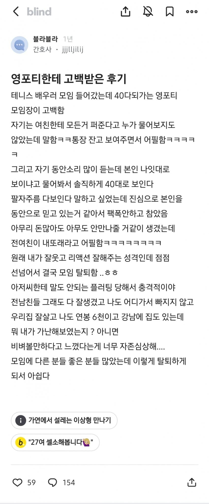

자존감 박살났나봄..

자존감 박살났나봄..
끼리끼리지 모. 건들만 하니 건드는거고. 원래 평범한 애들이 헌팅도 고백도 잘들어와. 저정도는? 하면서 건들기 쉬워보이니까
잘주게생겼나보지
나는 후배가 추천해서 모임 하나 가입해서 나갔더니 첫날에 바로 어디 어디 보톡스 맞으라고 알려주던데 ㅋㅋㅋㅋㅋㅋ
여자한테 고백을 한다 = 일방적이다
보통은 여자가 먼저 여지를 줌. 웃어준다 이런거 말고.
둘 다 구라. 고백도 구라. 고백이 아님. 만만해서 찝쩍댄 거임.
죽었으면
ㄹㅇ 성별 바꼈으면 개같이 팩트라고 믿었을 개붕이들 ㅋㅋㅋㅋㅋ